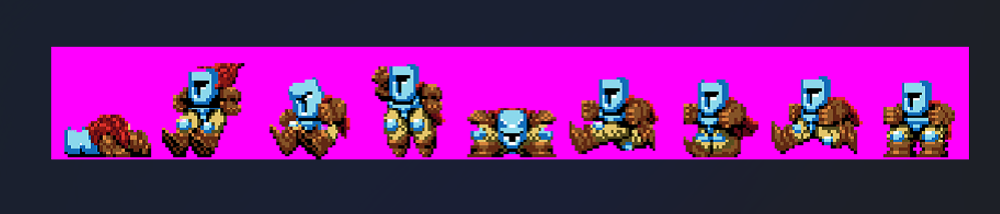
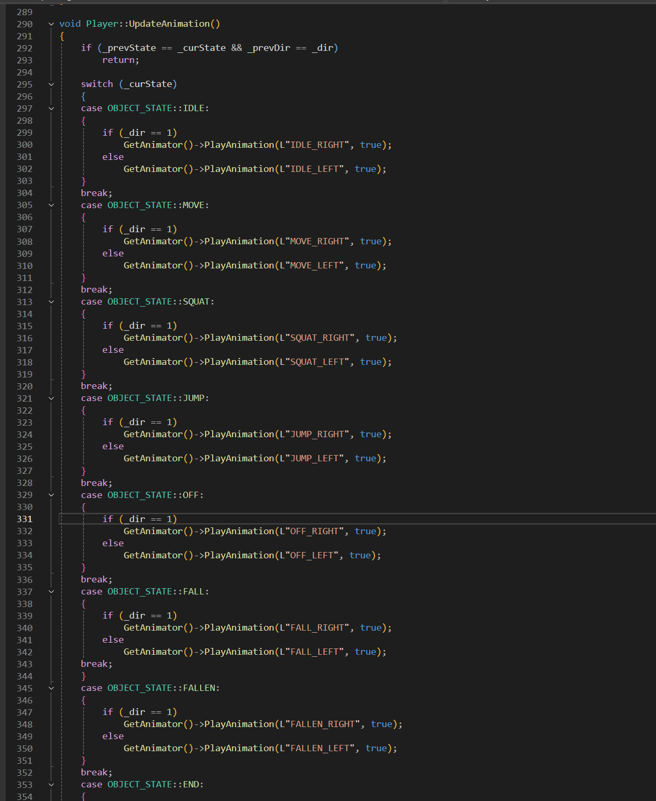
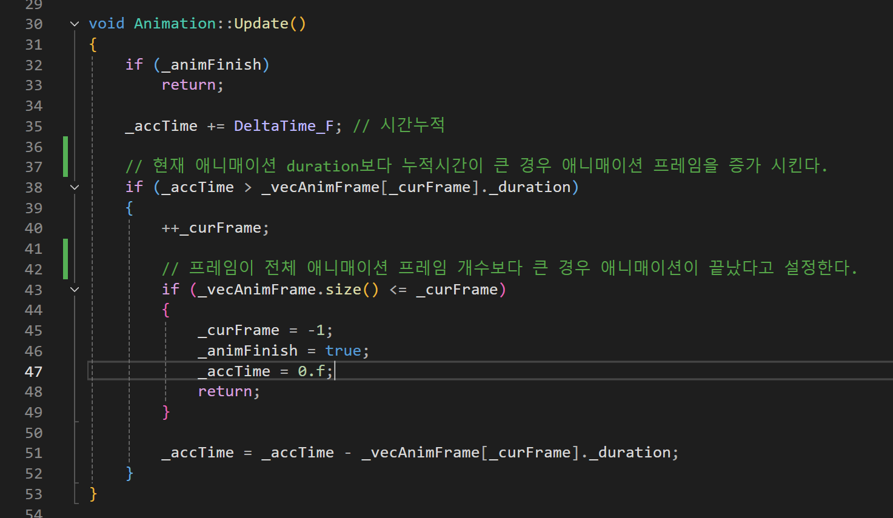
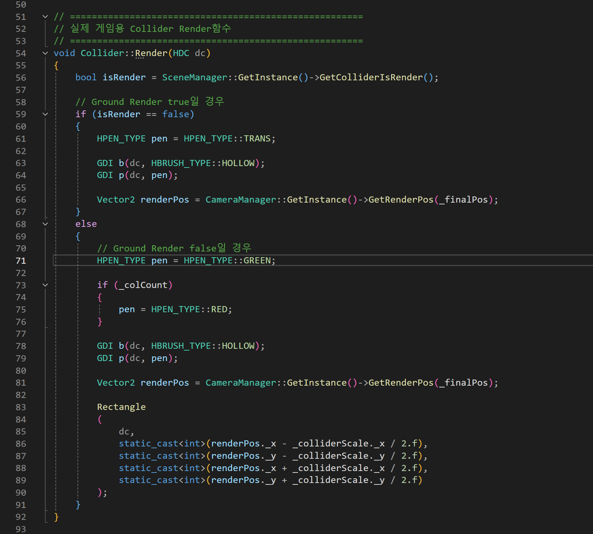
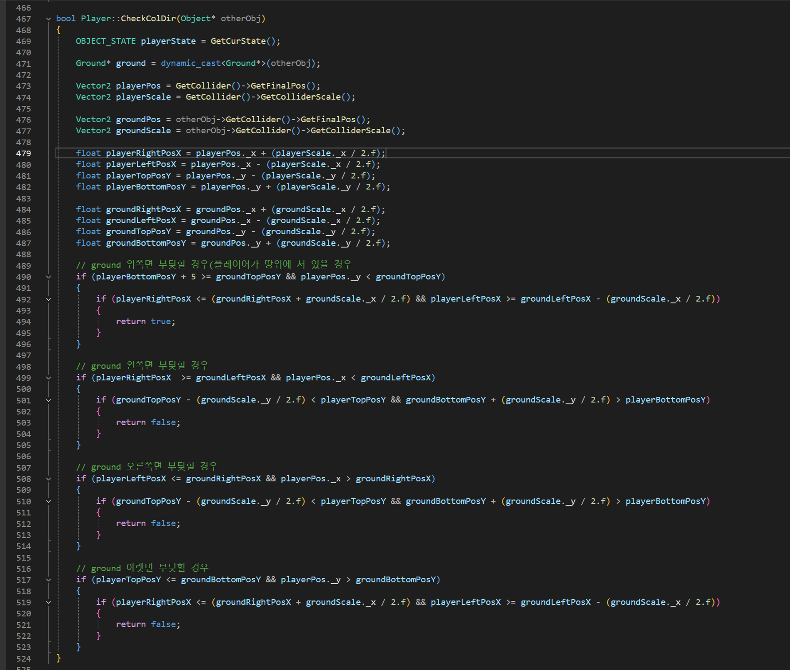
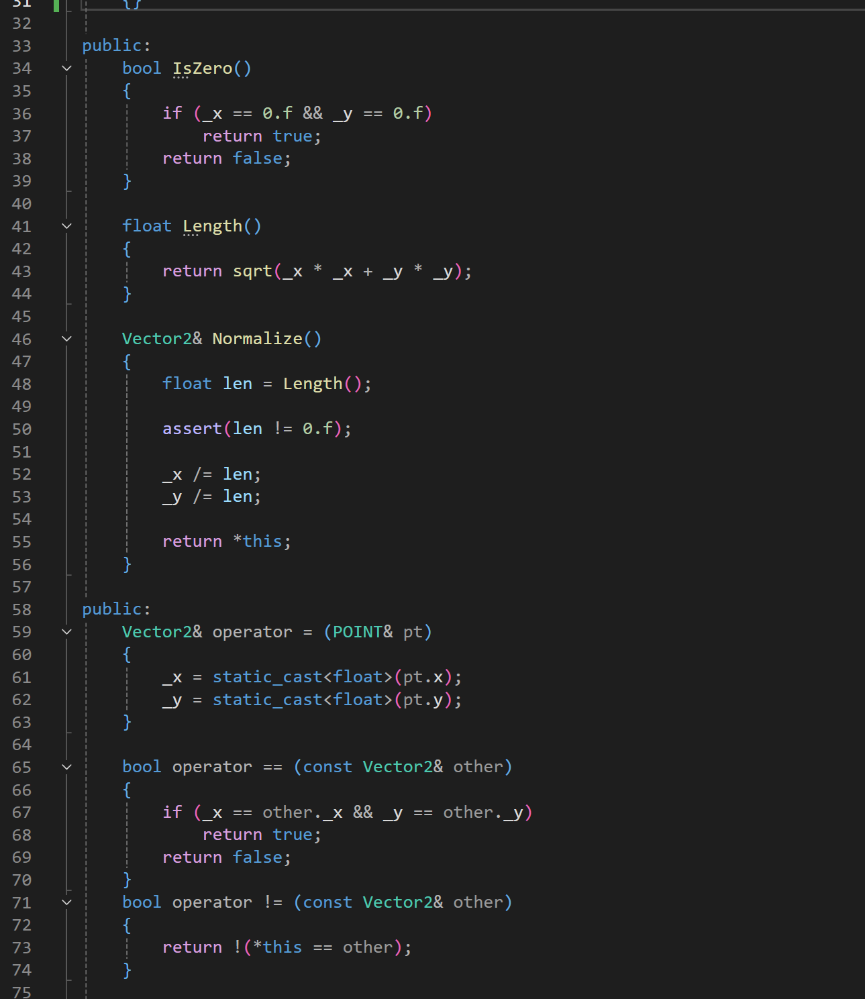
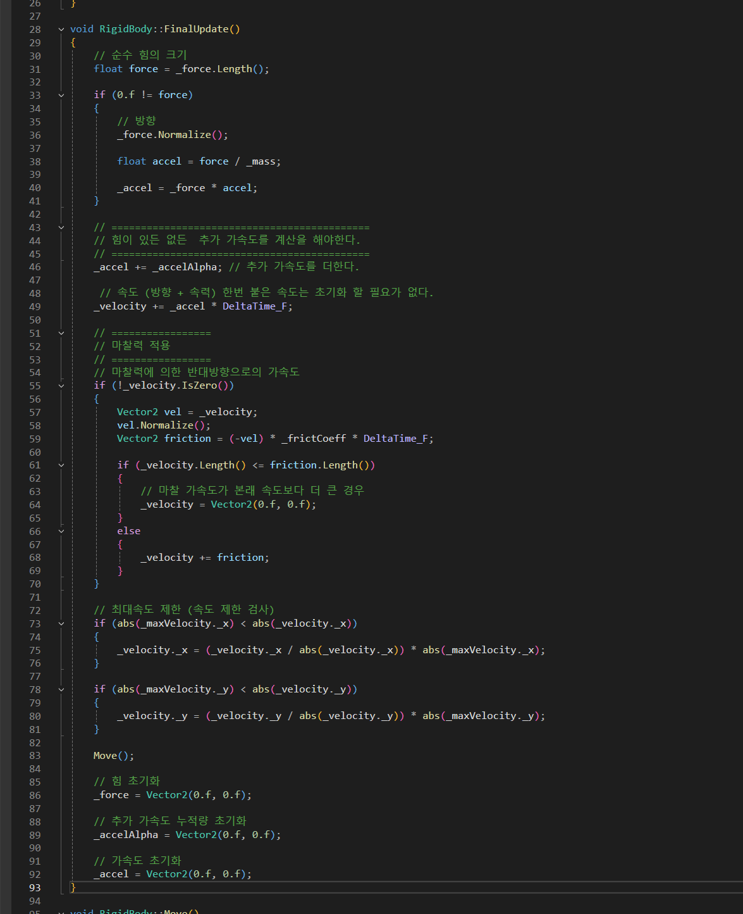
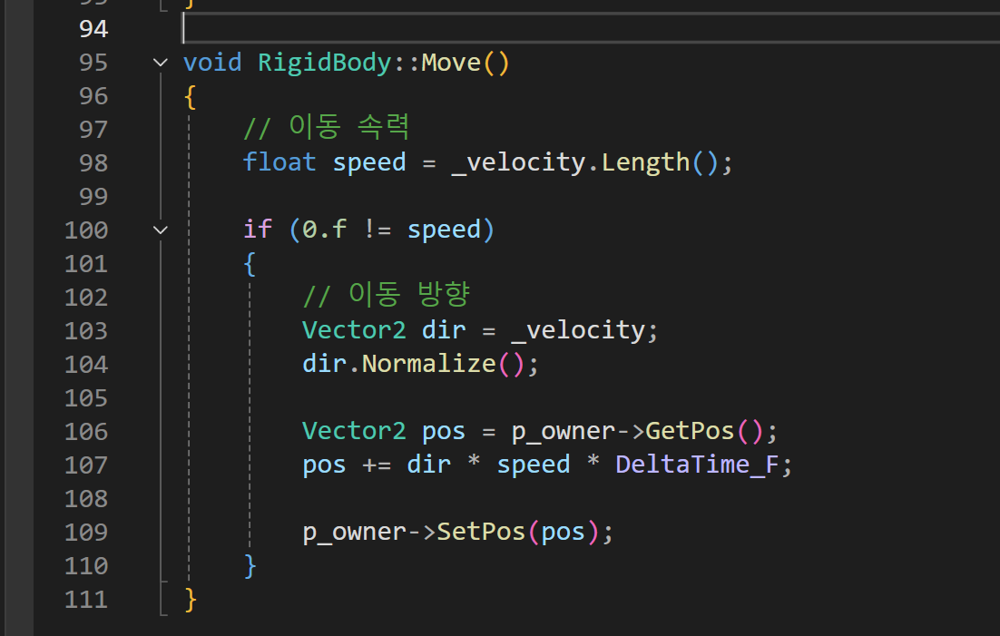

Jump King 모작 (2D)

구현 기능
텍스처 기반 애니메이션
Sprite Sheet / 상태 머신마젠타 색상을 제외한 스프라이트 시트에서 플레이어 상태(enum class)에 따라 애니메이션 재생. Animator + Animation 객체 분리 구조.
Animator와 Animation 객체를 분리하여, Animator가 여러 Animation을 관리하는 구조로 구현했습니다. 플레이어 상태가 변경되면 prevState와 curState를 비교하여 실제로 상태가 바뀌었을 때만 애니메이션을 전환합니다. 각 애니메이션은 duration에 따라 프레임을 증가시키며 텍스처를 변경하는 방식으로 재생됩니다.




상태별 애니메이션 전환 핵심
switch (mState) {
case ePlayerState::IDLE:
mAnimator->Play(L"IdleAnim");
break;
case ePlayerState::MOVE:
mAnimator->Play(L"MoveAnim");
break;
case ePlayerState::JUMP:
mAnimator->Play(L"JumpAnim");
break;
case ePlayerState::FALL:
mAnimator->Play(L"FallAnim");
break;
}2D AABB 충돌체
컴포넌트 / OnEnter, OnStay, OnExitCollider를 컴포넌트화하여 플레이어/Ground에 부착. OnEnter/OnStay/OnExit으로 충돌 상태 판별. WIN32 API PEN으로 충돌 영역 렌더링.
2D Collider를 컴포넌트화하여 플레이어와 Ground 객체에 부착하는 방식으로 구현했습니다. 플레이어의 위치와 사이즈를 기반으로 Ground 객체의 어느 면에 충돌했는지(위/아래/좌/우)를 계산합니다. 예를 들어 플레이어 밑면이 Ground 윗면보다 크거나 같으면 위에서 아래로 떨어진 것으로 판정하고, 세부 조건을 추가하여 정확한 충돌 방향을 분기합니다.


AABB 4방향 충돌 판정 핵심
// AABB 충돌 판정
if (playerBottom >= groundTop
&& playerTop <= groundBottom
&& playerRight >= groundLeft
&& playerLeft <= groundRight) {
// 충돌 발생 — 방향 판별
float overlapX = min(playerRight - groundLeft, groundRight - playerLeft);
float overlapY = min(playerBottom - groundTop, groundBottom - playerTop);
if (overlapY < overlapX) {
// 상하 충돌 (착지 또는 천장)
if (playerBottom - groundTop < groundBottom - playerTop)
player.y = groundTop - playerHeight; // 착지
}
}벡터 수학 + RigidBody
Vector2 / 마찰력 / 최대속도벡터의 길이/정규화/연산자 오버로딩을 직접 구현. RigidBody 컴포넌트로 가속도 기반 이동 + 마찰력을 모방하여 자연스러운 물리 이동.
수학 벡터의 길이(Length), 정규화(Normalize), 연산자 오버로딩(+, -, *, /)을 직접 구현하여 게임 내에서 사용할 수 있게 했습니다. RigidBody 컴포넌트는 힘(Force)을 받아 가속도를 계산하고, 속도에 누적하며, 마찰력을 반대 방향으로 적용하여 자연스럽게 감속합니다. 최대속도를 초과하면 클램핑하고, 마찰 가속도가 현재 속도보다 크면 즉시 정지시킵니다.



RigidBody::FinalUpdate 핵심
void RigidBody::FinalUpdate() {
// 힘 → 가속도
mAccel = mForce / mMass;
// 가속도 → 속도
mVelocity += mAccel * DeltaTime;
// 마찰력 적용
if (mVelocity.Length() > 0.f) {
Vector2 friction = -mVelocity.Normalize() * mFriction * DeltaTime;
if (friction.Length() >= mVelocity.Length())
mVelocity = Vector2::Zero;
else
mVelocity += friction;
}
// 최대속도 제한
if (mVelocity.Length() > mMaxSpeed)
mVelocity = mVelocity.Normalize() * mMaxSpeed;
// 이동 적용
mOwner->SetPos(mOwner->GetPos() + mVelocity * DeltaTime);
mForce = Vector2::Zero;
}